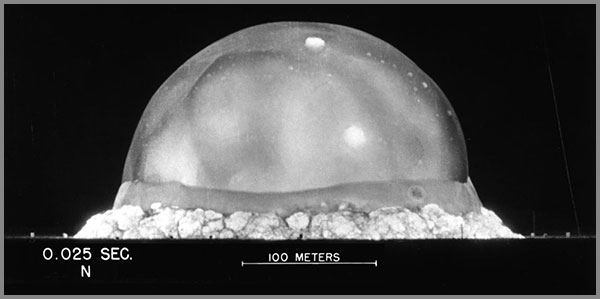

36. Չվնասելու Գիտակցությունից Ծնեբեկված Էթիկայի Ծիլերը
 |
1945 թվականի հուլիսի 16 էր։ Առավոտյան ժամը հինգն անց էր երեսունհինգ րոպե։ Նյու Մեքսիկոյի «Տրինիտի» փորձադաշտի անապատում նոր ծագած արևը դեռ չգիտեր որ մեկ րոպե անց պիտի խավարի արհեստական պայթյունից ծագած հազարավոր անգամ ավելի հզոր լույսի ստվերում: Իսկ մինչ այդ տիրող լռությունը ոչ թե պարզապես խախտվեց, այլ պայթեց հանկարծակի և տարածությունը պատռվեց հազարավոր արևների կուրացնող, սպանող տապով։ Դա միջուկային առաջին ռումբի փորձարկումն էր: Այդ ակնթարթին, երբ լաբորատոր սեղաններին միս ու արյուն ստացած բանաձևերն ու կատարյալ հաշվարկները արձակվեցին ֆիզիկական աշխարհի մարմնի մեջ, երկինքը վառվեց մի գույնով, որը բնությունը երբեք չէր ստեղծել։
Այդ կրակե ճեղքվածքի, մինչև երկինք խոյացող ու տիեզերքի հյուսվածքը հրկիզող սնկաձև ամպի առջև կանգնած Ջուլիուս Ռոբերտ Օպենհայմերը կարկամած՝ ոչ թե պարզապես նոր զենք տեսավ, այլ սեփական մաշկի վրա կատարյալ սարսուռի միջով զգաց, թե ինչպես է իր ստեղծած միտքը մեկ վայրկյանում ջարդում համակարգի բնական հավասարակշռությունը։
Այդտեղից վերադարձ չկար։ Շոկից կաթվածահար եղած գիտնականի շուրթերից ինքնաբերաբար դուրս թռավ հինդուիստական «Բհագավադգիտայի» սրբազան տողերի տեքստի սառը, դատապարտող տողերը. «Հիմա ես դարձա Մահը՝ աշխարհների կործանարարը»։
Սա գրական կամ հուզական պոռթկում չէր։ Սա մահկանացու մարդու կատարյալ սթափեցումն ու ամոթն էր, երբ սեփական հանճարի հետևում նա տեսավ անդունդ ու ներքին էթիկական արգելակների բացարձակ բացակայություն։
Պարադիգմի բարձրագույն իմաստն ու վերջին հանգրվանը ոչ թե իմացության անհագ նվաճումն է, այլ կեցության անաղարտությունը պահպանելու և առաջին հերթին՝ չվնասելու բացարձակ օրենքը։
Ինտելեկտուալ զսպվածությունը որպես հետքայլ անդառնալիության կետից
Մարդկության պատմության մեջ կան պահեր, երբ գիտելիքը դադարում է լինել ուժ և դառնում է վտանգ։ Այդ պահերը չեն նշվում ոչ մի օրացույցում, չեն արձանագրվում ոչ մի արխիվում։ Դրանք տեղի են ունենում ներսում՝ մեկ մարդու գիտակցության մեջ, երբ նա հանկարծ հասկանում է, որ իր ձեռքի տակ եղած գիտելիքը կարող է ոչնչացնել այն ամենը, ինչ ինքը սիրում է։
Այդ պահը մենք անվանում ենք անդառնալիության կետ։
Անդառնալիության կետը սահման է, որից այն կողմ գործողությունը չի կարող հետ վերցվել։ Ոչ ջնջվել, ոչ ուղղվել, ոչ մոռացվել։ Այնտեղից հետո գիտելիքը դադարում է լինել չեզոք և դառնում է ճակատագիր։
1945 թվականի հուլիսի 16-ին, Նյու Մեքսիկոյի անապատում, մարդկությունը հատեց այդ սահմանը։ Եվ այդ սահմանը հատողներից մեկը՝ Ջուլիուս Ռոբերտ Օպենհայմերը, դա հասկացավ ոչ թե մտքով, այլ մարմնով։ Նա տեսավ, թե ինչպես է իր իսկ հաշվարկած բանաձևը վերածվում մի հզոր արևի, որին ոչ ոք չէր կանչել։ Եվ այդ պահին նրա շուրթերից դուրս եկան բառեր, որոնք մարդկության պատմության մեջ դարձան ամենածանր ինքնադատապարտությունը:
Բայց այստեղ կա մի բան, որը հաճախ աննկատ է մնում։ Օպենհայմերը այդ բառերը չասաց երբ ստեղծում էր ռումբը։ Նա դրանք ասաց երբ տեսավ արդյունքը։ Այսինքն՝ նա անցավ անդառնալիության կետը, հետո հետ նայեց և հասկացավ, որ վերադարձ չկա։
Հարց է ծագում․ իսկ ի՞նչ կլիներ, եթե նա կանգ առներ ավելի վաղ։ Եթե այդ սահմանին մոտենալիս նա գիտակցեր, որ այնտեղից վերադարձ չկա, և հետ քայլեր։ Դա չէր նշանակի հրաժարվել գիտելիքից։ Դա կնշանակեր հրաժարվել գիտելիքը գործողության վերածելուց։
Այդ որոշումը մենք անվանում ենք ինտելեկտուալ զսպվածություն։ Ինտելեկտուալ զսպվածությունը գիտելիքի բացակայություն չէ։ Դա գիտելիքի առկայության մեջ կանգ առնելու կարողությունն է։ Դա այն պահն է, երբ դու գիտես, որ կարող ես անել մի բան, բայց գիտակցաբար չես անում, որովհետև հասկանում ես, որ այդ գործողությունը կփոխի ամեն ինչ անդառնալիորեն։
Սա նոր գաղափար չէ։ Մարդկությունը բազմիցս հանդիպել է այս ընտրությանը, և ամեն անգամ այդ ընտրությունը եղել է դժվար, ցավոտ և մենակ։
Ալբերտ Էյնշտեյնը 1939 թվականին նամակ գրեց ԱՄՆ նախագահ Ռուզվելտին՝ զգուշացնելով, որ Նացիստական Գերմանիան կարող է միջուկային ռումբ ստեղծել։ Դա այն նամակն էր, որից սկսվեց «Մանհեթենի նախագիծը»։ Բայց 1945 թվականից հետո, երբ ռումբը նետվեց Հիրոսիմայի և Նագասակիի վրա, Էյնշտեյնը դարձավ միջուկային զենքի տարածման ամենակրքոտ հակառակորդներից մեկը։ Նա հասկացավ, որ իր ստորագրությունը դարձավ անդառնալիության կետի մի մասը։
Նիլս Բորը՝ միջուկային ֆիզիկայի հիմնադիրներից մեկը, 1944 թվականին փորձեց համոզել Չերչիլին և Ռուզվելտին, որ միջուկային գիտելիքը պետք է կիսվի բոլոր երկրների հետ, որպեսզի կանխվի միջուկային մրցավազքը։ Նա հասկացել էր, որ եթե գիտելիքը մնա մեկ երկրի ձեռքում, ապա աշխարհը կկանգնի անդառնալիության կետի առաջ։ Նրա ձայնը չլսվեց։ Բայց նա փորձեց հետ քայլել։
Իսկ Ջոնաս Սոլկի պատմությունը ցույց է տալիս, որ ինտելեկտուալ զսպվածությունը կարող է լինել նաև գիտակցված հրաժարում։ 1955 թվականին Սոլկը մշակեց պոլիոմիելիտի պատվաստանյութը։ Նա կարող էր միլիոններ վաստակել։ Բայց նա որոշեց չարտադրել պատվաստանյութը մասնավոր ընկերությունների միջոցով, որովհետև վախենում էր, որ դա կդարձնի բուժումը անհասանելի աղքատների համար։ Նա հասավ անդառնալիության կետին, բայց հետ քայլեց, հանձնելով պատվաստանյութը հանրային հասանելիության:
Այս երեք պատմությունները տարբեր են, բայց ունեն մի ընդհանուր բան։ Ամեն մեկում գիտնականը հասել է մի կետի, որտեղից հետո ամեն ինչ կփոխվեր։ Եվ ամեն մեկը պետք է ընտրեր՝ շարունակե՞լ, թե՞ հետ քայլել։
Օպենհայմերը հետ չքայլեց։ Էյնշտեյնը հետ քայլեց, բայց ուշ։ Բորը փորձեց հետ քայլել, բայց մենակ մնաց։ Սոլկը հետ քայլեց ժամանակին։
Ի՞նչն է տարբերությունը։ Ի՞նչն է ստիպում մեկին կանգ առնել, մյուսին՝ ոչ։ Պատասխանը ոչ թե բանականության մեջ է, այլ գիտակցության մեջ։ Ինտելեկտուալ զսպվածությունը բանականության արգասիք չէ։ Դա գիտակցության ակտ է, որը գալիս է այն ժամանակ, երբ մարդը հասկանում է, որ գիտելիքը պատասխանատվություն է և ոչ թե ուժ։
Այստեղ կա մի շատ նուրբ բան։ Ինտելեկտուալ զսպվածությունը չի նշանակում չմտածել։ Այն չի նշանակում չուսումնասիրել։ Այն նշանակում է չգործել այն ժամանակ, երբ գործելու հետևանքները անդառնալի են։ Այսինքն՝ գիտելիքը կարող է լինել, բայց դրա կիրառումը՝ կանգնեցված։
Սա նման է մի բանի, որը մենք տեսնում ենք բնության մեջ։ Ոչ մի կենդանի չի ոչնչացնում իր սեփական միջավայրը, որովհետև դա կնշանակի ինքնասպանություն։ Բնության մեջ կա մի ներքին սահման, որը թույլ չի տալիս անցնել վերջնական գիծը։ Այդ սահմանը կարելի է անվանել կենդանի համակարգի իմաստություն։
Մարդը, որպես գիտակից էակ, պետք է ունենա նույն սահմանը։ Բայց մարդու մոտ այդ սահմանը չի գալիս բնազդով։ Այն պետք է ձևավորվի գիտակցությամբ։ Դա է ինտելեկտուալ զսպվածության էությունը․ ոչ թե արգելք դրսից, այլ սահման ներսից։
Այս սահմանը չի կարող պարտադրվել ոչ ոքի կողմից։ Ոչ օրենքով, ոչ կրոնով, ոչ իշխանությամբ։ Այն կարող է գալ միայն ներսից՝ որպես անաղարտ թրթիռ, որը չի աղավաղվել արտաքին աղմուկից։
Այսպիսով՝ ինտելեկտուալ զսպվածությունը ոչ թե թուլություն է, այլ ուժ։ Դա այն ուժն է, որը թույլ է տալիս մարդուն կանգնել անդունդի եզրին և հետ քայլել։ Եվ հենց այդ հետքայլն է, որ դարձնում է մեզ ոչ թե կործանողներ, այլ պահապաններ։ Բայց հետքայլը միշտ չէ, որ բավարար է։ Երբեմն գիտելիքն այնքան հզոր է, որ նույնիսկ հետ քայլելու որոշումը պետք է ամրապնդվի ինչ-որ ավելի խորը բանով։ Այդ ավելի խորը բանը այն է, ինչը դու չես կարող փոխել արտաքին օրենքով, բայց կարող ես փոխել ներսից։
Կենդանի համակարգը ճանաչվում է նրանով, որ այնտեղ գործողը կարող է կանգ առնել ինտելեկտուալ զսպվածությամբ՝ մի սահմանի առաջ, որը կանխագիտակցում է համակարգը։
Չկատարված հետհաշվարկը որպես արգելք
Մարդկությունը միշտ սիրել է հաշվել։ Հաշվել աստղերը, հաշվել օրերը, հաշվել հացահատիկը, հաշվել զինվորներին։ Հաշվելը եղել է վերահսկողության գործիք, իշխանության ձև, գիտելիքի չափ։ Եվ ամեն անգամ, երբ մարդը սովորել է հաշվել մի նոր բան, նա կարծել է, որ վերջապես տիրապետում է աշխարհին։
Բայց կա մի հաշվարկ, որը մարդկությունը մինչ օրս չի կատարել մեծամասնորեն։ Չի կատարել ոչ թե որովհետև չի կարողացել, այլ որովհետև գիտակցաբար չի կատարել։ Դա հետհաշվարկն է։
Հետհաշվարկը հաշվարկի հակառակ ուղղությունն է։ Եթե սովորական հաշվարկը գնում է պատճառից դեպի հետևանք, ապա հետհաշվարկը գնում է հետևանքից դեպի պատճառ։ Այն փորձում է վերականգնել այն, ինչը կորել է, բացահայտել այն, ինչը թաքնված է, վերադարձնել այն, ինչը անհետացել է։
Սա ինքնին չար բան չէ։ Հետհաշվարկը կարող է լինել ճանաչողության հզոր գործիք։ Այն թույլ է տալիս հասկանալ, թե ինչպես է աշխարհը կառուցված, ինչպես են կապված իրար հետ տարբեր երևույթներ, ինչպես է ծնվել այն, ինչը մենք տեսնում ենք այսօր։ Բայց հետհաշվարկը կարող է լինել նաև վտանգավոր։ Երբ այն ուղղված է դեպի կենդանի համակարգեր, երբ այն փորձում է վերականգնել ոչ թե անցյալը, այլ կենդանի ներկան, այն կարող է խախտել այն հավասարակշռությունը, որը դարեր շարունակ կառուցվել է։
Այսօր մենք ունենք տեխնոլոգիաներ, որոնք թույլ են տալիս հետհաշվարկ անել կյանքի ամենախոր մակարդակում։ Մենք կարողանում ենք կարդալ գենոմը, վերծանել նրա կոդը, հասկանալ, թե ինչպես են գեները կառավարում մարմինը։ Եվ այս հնարավորությունը մեզ տալիս է մի հարց, որը մենք չենք կարող անտեսել․ Ի՞նչ կլինի, եթե մենք կարողանանք հետհաշվարկել կյանքի կոդը և վերականգնել այն ազդակները, որոնք կառավարում են գեները։
Այս հարցը տեսական չէ։ 1975 թվականին, Կալիֆորնիայի Ասիլոմար քաղաքում, մոլեկուլային կենսաբանները հավաքվեցին մի կոնֆերանսի, որտեղ որոշեցին կամավոր մորատորիում հայտարարել գենային ինժեներիայի վրա։ Նրանք հասկացել էին, որ նոր տեխնոլոգիան կարող է անդառնալի հետևանքներ ունենալ, և որ մինչև չհասկանանք, թե ինչ ենք անում, չպետք է անենք։
2015 թվականին, երբ CRISPR տեխնոլոգիան հնարավորություն տվեց խմբագրել մարդու գենոմը, միջազգային գիտնականները կոչ արեցին չկիրառել այդ տեխնոլոգիան մարդկային սաղմերի վրա։ Նրանք հասկացել էին, որ այդ խմբագրումը կարող է փոխանցվել սերունդներին, և որ մենք չգիտենք, թե դա ինչ հետևանքներ կունենա։
2018 թվականին չինացի գիտնական Հե Ցզյանկուն խախտեց այդ արգելքը։ Նա խմբագրեց մարդկային սաղմերի գենոմը և ստեղծեց աշխարհում առաջին գենետիկորեն խմբագրված երեխաներին։ Նա ասաց, որ դա արել է մարդկության օգտի համար։ Բայց ամբողջ աշխարհը դատապարտեց նրան։ Ոչ թե որովհետև նա սխալ բան արեց, այլ որովհետև նա անցավ անդառնալիության կետը, առանց հարցնելու, թե արդյոք դա պետք է անել, թե ոչ։
Այս երեք իրադարձությունները՝ Ասիլոմարը, CRISPR-ի արգելքը, Հե Ցզյանկուի դեպքը, ցույց են տալիս, որ մարդկությունը բազմիցս կանգնել է անդառնալիության կետի առաջ, և ամեն անգամ ընտրել է չկատարել այն, ինչ կարող է անել։
Բայց ի՞նչ է նշանակում «չկատարել»։ Դա նշանակում է, որ գիտելիքը կա, բայց դրա կիրառումը կանգնեցված է։ Դա նշանակում է, որ մենք ունենք հնարավորություն, բայց մենք չենք օգտագործում այն։ Դա նշանակում է, որ մենք գիտակցաբար դնում ենք արգելք մեր իսկ առջև։ Սա այն է, ինչ մենք անվանում ենք չկատարված հետհաշվարկ։
Չկատարված հետհաշվարկը ոչ թե անկարողություն է, այլ որոշում։ Դա այն վիճակն է, երբ դու գիտես, որ կարող ես անել մի բան, բայց գիտակցաբար չես անում։ Դա արգելք է, որը դնում ես ինքդ քո առաջ, առանց որևէ մեկի պարտադրանքի։
Այս արգելքը կարող է թվալ անիմաստ։ Ինչու՞ չօգտագործել գիտելիքը, եթե այն կա։ Ինչու՞ չանել այն, ինչ կարելի է անել։ Բայց պատասխանը պարզ է․ որովհետև ոչ ամեն ինչ, ինչ կարելի է անել, պետք է անել։
Մարդկությունը դարեր շարունակ սովորել է, որ գիտելիքը ուժ է։ Բայց նա դեռ չի սովորել, որ գիտելիքը պատասխանատվություն է։ Եվ այդ պատասխանատվությունը չի կարող դրվել միայն գիտնականների վրա։ Այն դրվում է բոլորի վրա։ Ահա թե ինչու չկատարված հետհաշվարկը արգելք է։ Այն ասում է՝ մենք կարող ենք, բայց չենք անի։ Մենք կարող ենք հասկանալ, բայց չենք միջամտի։ Մենք կարող ենք վերականգնել, բայց չենք խախտի։
Սա այն էթիկական դիրքորոշումն է, որը գալիս է Օպենհայմերի դասից։ Նա հասավ անդառնալիության կետին, բայց չկանգնեցրեց։ Նա հետհաշվարկեց, բայց չկարողացավ չկատարել։ Նրա համար գիտելիքը դարձավ ճակատագիր, որովհետև նա չկարողացավ դնել արգելք իր առաջ։
Մենք այսօր կանգնած ենք նույն ընտրության առաջ։ Մենք ունենք գիտելիք, որը թույլ է տալիս հետհաշվարկ անել կյանքի կոդը։ Մենք ունենք տեխնոլոգիաներ, որոնք թույլ են տալիս խմբագրել գենոմը, վերականգնել ազդակները, փոխել ընթերցման ռեժիմը։ Եվ մենք պետք է որոշենք՝ կատարե՞լ, թե՞ չկատարել։
Այս գլուխը պնդում է, որ չկատարելը ինքնին ակտ է։ Դա պասիվություն չէ, դա գործողություն է։ Դա այն գործողությունն է, որը սահմանում է մեզ որպես գիտակից, պատասխանատու էակներ։ Դա այն գործողությունն է, որը տարբերում է մեզ Օպենհայմերից, որը չկարողացավ չկատարել և այս չկատարումը չի կարող պարտադրվել ոչ ոքի կողմից։ Այն պետք է գա ներսից։ Այն պետք է լինի այն անաղարտ թրթիռի մի մասը, որը դեռ չի աղավաղվել արտաքին աղմուկից։
Իսկական արգելքը դրսից չի գալիս: Դրսից եկող արգելքը միայն վախ է սերմանում և փակում է ճանապարհը, իսկ ներսից ծնված արգելքը՝ կենդանի միտք է, որ կարող է չկատարել նույնիսկ այն, ինչ կարող է։
Անաղարտ թրթիռի ինքնաբուխ հոսքը որպես համակարգային էթիկայի երաշխավոր
Մարդկությունը դարեր շարունակ փնտրել է մի բան, որը կարող է երաշխավորել էթիկան։ Ոմանք այն փնտրել են օրենքներում, ոմանք՝ կրոններում, ոմանք՝ փիլիսոփայության մեջ։ Եվ ամեն անգամ այդ փնտրտուքը հանգեցրել է միևնույն եզրակացության: Դա այն է, որ արտաքին կանոնները չեն կարող երաշխավորել ներքին էթիկան։
Օրենքը կարող է արգելել սպանությունը, բայց չի կարող արգելել ներքին ատելությունը։ Կրոնը կարող է պատվիրել սերը, բայց չի կարող ստիպել սրտին։ Փիլիսոփայությունը կարող է բացատրել բարությունը, բայց չի կարող ստեղծել այն։ Այսինքն՝ արտաքին ամեն ինչ ունի մի սահման, որից այն կողմ այն անզոր է։ Այդ սահմանից այն կողմ սկսվում է մի բան, որը չի կարող պարտադրվել, չի կարող հրամայվել, չի կարող վերահսկվել։
Այդ բանը ինքնաբուխությունն է։ Ինքնաբուխությունը այն վիճակն է, երբ գործողությունը գալիս է ներսից, այլ ոչ թե դրսից։ Այն չի պահանջում արտաքին հսկողություն, որովհետև ինքն է իր հսկողությունը։ Այն չի պահանջում պարգև կամ պատիժ, որովհետև ինքն է իր պարգևը։ Այն չի պահանջում վկա, որովհետև ինքն է իր վկան։ Եվ ահա այստեղ է, որ մենք հանդիպում ենք մի երևույթի, որը մենք անվանում ենք անաղարտ թրթիռ։
Անաղարտ թրթիռը այն հնչյունն է, որը դեռ չի աղավաղվել արտաքին աղմուկից։ Այն մաքուր է, պարզ, անկեղծ։ Այն չի փորձում լինել ավելին, քան կա։ Այն չի թաքցնում իր բնույթը, չի ձևափոխվում հանգամանքներից։ Այն պարզապես կա։
Այս հասկացությունը նոր չէ։ Մարդկությունը բազմիցս հանդիպել է դրան, բայց միշտ տարբեր անուններով։ Երաժշտության մեջ այն կոչվում է մաքուր հնչյուն։ Հնդկական դասական երաժշտությունը, որը պահպանվել է հազարամյակներ շարունակ, հիմնված է մաքուր սվարաների վրա՝ առանց արհեստական միջամտության։ Այդ սվարաները չեն փոխվել դարերի ընթացքում, չեն հարմարվել նորաձևությանը, չեն ենթարկվել արտաքին ճնշմանը։ Նրանք պահպանել են իրենց անաղարտությունը, և հենց այդ անաղարտությունն է, որ դարձնում է դրանք կենդանի։
Ռավի Շանկարը՝ հնդիկ սիտարահարը, ով ամբողջ աշխարհին ներկայացրեց հնդկական դասական երաժշտությունը, միշտ ասում էր, որ իսկական երաժշտությունը գալիս է ներսից և ոչ թե արտաքին կանոններից։ Նա չէր նվագում այն, ինչ սպասում էր հանդիսատեսը։ Նա նվագում էր այն, ինչ գալիս էր իր ներքին թրթիռից։
Գրիգորյան երգեցողությունը նույնպես պահպանել է այդ անաղարտությունը։ Դարեր շարունակ վանականները երգել են նույն մեղեդիները, առանց փոփոխության, առանց արդիականացման։ Նրանք չեն փորձել դուր գալ աշխարհին։ Նրանք պարզապես պահպանել են այն անաղարտ հնչյունը, որն իրենք ստացել են նախորդներից։
Ջոն Քեյջը՝ ամերիկացի կոմպոզիտոր, 1952 թվականին գրեց մի ստեղծագործություն, որը կոչվում էր «4′33″»։ Այն բաղկացած էր չորս րոպե և երեսուներեք վայրկյան լռությունից։ Կատարողը բեմ էր դուրս գալիս, նստում էր գործիքի առջև և ոչինչ չէր անում։ Հանդիսատեսը լսում էր սեփական շնչառությունը, դահլիճի աղմուկը, իրենց իսկ մտքերը։ Քեյջը ցույց էր տալիս, որ անաղարտ թրթիռը կարող է լինել լռության մեջ։ Այն չի պահանջում ձայն, չի պահանջում մեղեդի, չի պահանջում նվագ։ Այն պարզապես կա։
Այս բոլոր օրինակները ցույց են տալիս, որ անաղարտ թրթիռը չի կարող ստեղծվել արհեստականորեն։ Այն կա՛մ կա, կա՛մ չկա և երբ այն ինքնաբուխ է, այն դառնում է համակարգային էթիկայի երաշխավոր։
Երբ մենք ասում ենք, որ անաղարտ թրթիռի ինքնաբուխ հոսքը համակարգային էթիկայի երաշխավորն է, մենք ասում ենք, որ առանց այդ հոսքի, էթիկան չի կարող կայուն լինել։ Այն կդառնա արտաքին կանոն, որը կփլուզվի առաջին իսկ ճնշման տակ։ Այն կդառնա դատարկ ձև, որը ոչ ոք չի հարգի։ Այն կդառնա կեղծիք, որը կծածկի իրական դեմքը։ Բայց երբ էթիկան հիմնված է անաղարտ թրթիռի ինքնաբուխ հոսքի վրա, այն դառնում է կենդանի։ Այն չի պահանջում արտաքին հսկողություն, որովհետև ինքն է իր հսկողությունը։ Այն չի պահանջում վկա, որովհետև ինքն է իր վկան։ Այն չի պահանջում պարգև կամ պատիժ, որովհետև ինքն է իր պարգևը։
Այսպիսով՝ անաղարտ թրթիռի ինքնաբուխ հոսքը ոչ թե պարզապես էթիկայի մաս է։ Այն հիմքն է։ Դա այն հիմքն է, որը թույլ է տալիս էթիկային լինել կենդանի, ոչ թե սառած։ Դա այն հոսքն է, որը թույլ է տալիս էթիկային լինել ինքնաբուխ, ոչ թե պարտադրված։ Դա այն երաշխավորն է, որը թույլ է տալիս էթիկային լինել իսկական, ոչ թե կեղծ։
Երբ մարդը գործում է անաղարտ թրթիռից, նա չի հարցնում՝ «ի՞նչ կասեն ուրիշները»։ Նա չի հարցնում՝ «ի՞նչ օգուտ կունենամ»։ Նա չի հարցնում՝ «արդյո՞ք դա թույլատրելի է»։ Նա պարզապես գործում է, որովհետև այդ գործողությունը գալիս է իր խորքից։ Եվ այդ գործողությունը միշտ էթիկական է, որովհետև անաղարտ թրթիռը չի կարող ծնել հակաէթիկական գործողություն։
Այստեղ կա մի շատ նուրբ բան։ Անաղարտ թրթիռ չի նշանակում միշտ լավ լինել։ Այն չի նշանակում միշտ ճիշտ լինել։ Այն նշանակում է միշտ իսկական լինել։ Իսկ իսկականությունը ինքնին էթիկական արժեք է, որովհետև այն չի կարող խաբել, չի կարող կեղծել, չի կարող մանիպուլյացիայի ենթարկել։
Օպենհայմերը 1945-ին անաղարտ չէր։ Նրա թրթիռը աղավաղված էր պատերազմի, վախի, պարտքի զգացումի, գիտական հետաքրքրության աղմուկով։ Նա գործեց այդ աղմուկից ելնելով, այլ ոչ թե անաղարտ թրթիռից։ Եվ դա էր պատճառը, որ նա չկարողացավ կանգ առնել անդառնալիության կետի առջև։
Եթե նա գործեր անաղարտ թրթիռից, նա կզգար այն սահմանը, որը կանխագիտակցում է համակարգը։ Նա կհասկանար, որ գիտելիքը, որը նա ստեղծում է, անդառնալիորեն կփոխի աշխարհը։ Եվ նա հետ կքայլեր։
Այսինքն՝ անաղարտ թրթիռի ինքնաբուխ հոսքը ոչ միայն էթիկայի երաշխավորն է։ Այն նաև անդառնալիության կետի զգացողության աղբյուրն է։ Այն թույլ է տալիս մարդուն զգալ սահմանը, նախքան այն հատելը։ Այն թույլ է տալիս կանխագիտակցել այն, ինչ դեռ չի եղել։ Եվ այս կանխագիտակցումը չի գալիս բանականությունից։ Այն գալիս է մարմնից, շնչից, թրթիռից։ Այն գալիս է այն մասից, որը դեռ չի աղավաղվել արտաքին աշխարհի կողմից։ Այն գալիս է այն խորքից, որտեղ մարդը դեռ մեկ է բնության հետ։ Ահա թե ինչու անաղարտ թրթիռի ինքնաբուխ հոսքը համակարգային էթիկայի երաշխավորն է։ Այն միակ բանն է, որը չի կարող կեղծվել, չի կարող պարտադրվել, չի կարող գնվել կամ վաճառվել։ Այն կա՛մ կա, կա՛մ չկա։ Եվ երբ այն կա, էթիկան դառնում է կենդանի։
Այնտեղ, ուր թրթիռը մնում է անաղարտ, էթիկան դառնում է ինքնաբավ և մարդն այլևս վկայի, պարգևի կամ պատժի կարիք չի ունենում, որովհետև նրա արարքն ինքնին արդեն վկա է, պարգև կամ պատիժ իր ներսի համար։
Բարությունը որպես համակարգի հակաէթիկական արգելակ
Մարդկային պատմության մեջ կան պահեր, երբ համակարգերը սկսում են քայքայվել ոչ թե դրսից եկող հարվածներից, այլ ներսից ծնված հակաէթիկական ուժերից։ Այդ ուժերը չեն գոռում, չեն սպառնում, չեն հարձակվում։ Նրանք ներթափանցում են համակարգի հյուսվածքի մեջ՝ կամաց, աննկատ, գրեթե անմեղ։ Եվ երբ համակարգը գիտակցում է, որ ինչ-որ բան այնպես չէ, արդեն ուշ է լինում։
Այս ուժերին մենք անվանում ենք հակաէթիկական։ Հակաէթիկականը ոչ թե «ոչ էթիկական» է, ոչ թե «անբարոյական», ոչ թե «չար»։ Այդ բառերը չափազանց պարզ են, չափազանց հարմար, չափազանց մակերեսային։ Հակաէթիկականը ակտիվ ուժ է, որը գիտակցաբար կամ անգիտակցաբար հակադրվում է էթիկային։ Այն չի մերժում էթիկան որպես գաղափար։ Այն մերժում է էթիկան որպես գործողություն։ Այն թույլ է տալիս, որ էթիկան մնա որպես խոսք, բայց ոչ որպես արարք։
Հակաէթիկական ուժերի օրինակները շատ են։ Դրանք չեն սահմանափակվում մեկ դարով, մեկ մշակույթով, մեկ քաղաքակրթությամբ։ Դրանք կան ամենուր, որտեղ մարդը գործում է առանց ներքին արգելքի։
Երկրորդ համաշխարհային պատերազմի տարիներին Ռաուլ Վալենբերգը՝ շվեդ դիվանագետ, աշխատելով Բուդապեշտում, փրկեց տասնյակ հազարավոր հունգարացի հրեաների կյանքեր։ Նա կեղծ շվեդական անձնագրեր էր տալիս, կեղծ դիվանագիտական ապաստան էր ստեղծում, և նույնիսկ մտնում էր գնացքներ, որոնք տանում էին մահվան ճամբարներ, և հանում էր մարդկանց այնտեղից։ Նա ոչ մի արտաքին օրենք չէր դիտարկում դա անելու համար։ Նա գործում էր այն պատճառով, որ իր ներսում կար մի բան, որը թույլ չէր տալիս լռել։ Դա բարություն էր։
Օսկար Շինդլերը՝ գերմանացի գործարար, ով սկզբում շահույթ էր փնտրում պատերազմից, աստիճանաբար վերածվեց փրկիչի։ Նա օգտագործեց իր գործարանը որպես ապաստան հազարավոր հրեաների համար։ Նա կաշառեց պաշտոնյաներին, կեղծեց փաստաթղթեր, վտանգեց իր կյանքը։ Երբ պատերազմն ավարտվեց, նա ասաց․ «Ես կարող էի ավելի շատ փրկել։ Ես կարող էի ավելի շատ անել»։ Նա չէր խոսում հերոսության մասին։ Նա խոսում էր բարության մասին, որպես մի ակտիվ ուժի, որը կանգնեցնում է հակաէթիկական ուժերի տարածումը։
Նելսոն Մանդելան 27 տարի անցկացրեց բանտում՝ պայքարելով ապարտեիդի դեմ։ Երբ ազատ արձակվեց և չընտրեց վրեժը։ Նա չընտրեց բռնությունը։ Նա ընտրեց բանակցությունները, հաշտությունը, միասնությունը։ Նա կարող էր դառնալ հակաէթիկական ուժերի դեմ պայքարի դաժան առաջնորդ։ Բայց նա ընտրեց բարությունը՝ որպես արգելակ, որը թույլ չտվեց, որ ցիկլը շարունակվի։
Հաննա Արենդտը՝ գերմանացի փիլիսոփա, 1963 թվականին գրեց «Չարի սովորականությունը» գիրքը՝ նվիրված նացիստական պաշտոնյա Ադոլֆ Այքմանի դատավարությանը։ Նա նկատեց, որ Այքմանը սարսափելի չարագործ չէր։ Նա սովորական մարդ էր, ով կատարում էր հրամաններ առանց հարցնելու, առանց մտածելու, առանց արգելքի։ Նա չէր ատում հրեաներին։ Նա պարզապես չէր մտածում։ Արենդտը ցույց տվեց, որ ամենամեծ չարը գալիս է ոչ թե ատելությունից, այլ անմտությունից՝ մտքի բացակայությունից, ներքին արգելքի բացակայությունից։
Այս չորս պատմությունները տարբեր են, բայց ունեն մի ընդհանուր բան։ Ամեն մեկում կա մի ուժ, որը հակադրվում է էթիկային։ Ամեն մեկում կա մի մարդ, որը կանգնում է այդ ուժի դեմ։ Եվ ամեն մեկում այդ մարդուն ուժ է տալիս ոչ թե արտաքին օրենքը, ոչ թե հրամանը, ոչ թե վարձատրությունը, այլ բարությունը՝ որպես ներքին արգելակ ուղղված հակաէթիկական ուժի տարածմանը։
Բարությունը, որպես արգելակ, չի գործում ուժով։ Այն չի հակադարձում։ Այն չի պատժում։ Այն վրեժխնդիր չի լինում։ Այն պարզապես կանգնեցնում է։ Դա այն ուժն է, որը թույլ չի տալիս, որ ցավի շղթայական ռեակցիան շարունակվի։ Դա այն ուժն է, որը կլանում է հարվածը և չի փոխանցում այն հաջորդիվ։
Էմանուել Լևինասը՝ ֆրանսիացի փիլիսոփա, ասում էր, որ էթիկան առաջին փիլիսոփայությունն է։ Նրա համար բարությունը ոչ թե զգացմունք էր, ոչ թե սկզբունք, այլ պատասխանատվություն Ուրիշի հանդեպ։ Նա ասում էր, որ երբ դու նայում ես Ուրիշի դեմքին, դու տեսնում ես մի պահանջ, որը գալիս է ավելի վաղ, քան ցանկացած օրենք, ավելի վաղ, քան ցանկացած պայմանագիր։ Դա այն պահանջն է, որը թույլ չի տալիս քեզ անտարբեր լինել։ Դա այն ուժն է, որը կանգնեցնում է հակաէթիկականը։
Բարությունը, որպես համակարգի հակաէթիկական արգելակ, աշխատում է մի պարզ սկզբունքով։ Երբ համակարգում առաջանում է հակաէթիկական ուժ, որը փորձում է տարածվել, բարությունը ներկայանում է որպես կանգառ։ Այն չի վերացնում ուժը։ Այն չի ոչնչացնում այն։ Այն պարզապես կանգնեցնում է, թույլ չի տալիս, որ այն անցնի հաջորդ օղակին։ Բարությունը որպես արգելակ չի պահանջում հերոսություն։ Այն չի պահանջում զոհաբերություն։ Այն չի պահանջում հատուկ ուժ։ Այն պահանջում է միայն ներկայություն։ Ներկայություն այն պահին, երբ հակաէթիկական ուժը փորձում է անցնել։ Ներկայություն, որը կանգնեցնում է։ Ներկայություն, որը չի փոխանցում հարվածը։ Այս ներկայությունը կարող է լինել մի բառ, որը ասվում է ժամանակին, մի գործողություն, որը կատարվում է, մի որոշում, որը ընդունվում է և հենց այդ ասվածը, կատարվածը, ընդունվածը դառնում են արգելակ, որը փրկում է համակարգը։
Վալենբերգը չփրկեց բոլորին։ Շինդլերը չփրկեց բոլորին։ Մանդելան չվերացրեց ապարտեիդը մեկ օրում։ Բայց նրանք արեցին մի բան, որը ավելի կարևոր է։ Նրանք կանգնեցրին հակաէթիկական ուժի տարածումը։ Նրանք թույլ չտվեցին, որ ցավը շարունակվի անվերջ։
Ահա թե ինչու բարությունը համակարգի հակաէթիկական արգելակն է։ Այն չի պայքարում չարի դեմ։ Այն պարզապես կանգնեցնում է չարի տարածումը և այդ կանգնեցումը բավարար է, որպեսզի համակարգը շարունակի ապրել։
Բարությունը չի հաղթում չարին, այն պարզապես կանգնեցնում է նրան, և այդ կանգնեցումն է, որ փրկում է համակարգը կործանումից, որովհետև ամենամեծ հաղթանակը ոչ թե ոչնչացնելն է, այլ թույլ չտալը, որ չարը շարունակվի։
Վերադարձ դեպի Տրինիտի
Ամեն ճանապարհ ունի մի կետ, որտեղից այն սկսվում է և ամեն ճանապարհ ունի մի կետ, որտեղ վերադառնում ես։ Վերադառնում ես ոչ թե նրա համար, որ շարժումը դադարում է, այլ որովհետև շարժումը լրացվում է։ Այն, ինչ սկսվել էր մի տեղ, վերադառնում է նույն տեղը՝ փոխված, հարստացած։
Մեր ճանապարհը սկսվեց Նյու Մեքսիկոյի անապատում՝ 1945 թվականի հուլիսի 16-ին։ Մենք կանգնած էինք Օպենհայմերի կողքին, երբ նա տեսավ արհեստական արևը, որը ոչ ոք չէր կանչել։ Մենք լսեցինք նրա շուրթերից «Հիմա ես դարձա Մահը» բառերը, որոնք դարձան մարդկության պատմության ամենածանր ինքնադատապարտությունը։ Եվ մենք հասկացանք, որ այդ պահին մարդկությունը հատեց մի սահման, որը մենք անվանեցինք անդառնալիության կետ։ Հետո մենք անցանք այս գործի գրվածքի միջով և հիմա մենք վերադառնում ենք Տրինիտի։
Բայց այս անգամ մենք այնտեղ ենք ոչ թե որպես վկաներ, այլ որպես մասնակիցներ։ Այս անգամ մենք գիտենք, թե ինչ կարող էր լինել։ Մենք գիտենք, որ Օպենհայմերը կարող էր հետ քայլել, բայց չարեց։ Մենք գիտենք, որ նա կարող էր չկատարել, բայց կատարեց։ Մենք գիտենք, որ նա կարող էր լսել իր անաղարտ թրթիռը, բայց չլսեց։ Մենք գիտենք, որ նա կարող էր բարություն դրսևորել, բայց չդրսևորեց։
Այս գիտելիքով մենք այժմ կանգնած ենք նույն անապատում։ Մենք տեսնում ենք նույն արհեստական արևը։ Մենք լսում ենք նույն լռությունը։ Բայց մենք այլևս նույնը չենք։ Մենք անցել ենք հինգ գլուխների միջով, և այդ ճանապարհը մեզ փոխել է։
Այս անգամ, երբ մենք նայում ենք սնկաձև ամպին և չենք զգում անզորություն։ Մենք զգում ենք պատասխանատվություն։ Որովհետև մենք գիտենք, որ այդ ամպը ծնվել է ոչ թե չարությունից, այլ անմտությունից։ Այն ծնվել է ոչ թե ատելությունից, այլ արգելքի բացակայությունից։ Այն ծնվել է ոչ թե վախից, այլ անաղարտ թրթիռի բացակայությունից և մենք գիտենք, որ նույնը կարող է կրկնվել։
Այսօր մենք ունենք գիտելիք, որը թույլ է տալիս հետհաշվարկ անել կյանքի կոդը։ Մենք ունենք տեխնոլոգիաներ, որոնք թույլ են տալիս խմբագրել գենոմը, վերականգնել ազդակները, փոխել ընթերցման ռեժիմը։ Եվ մենք պետք է որոշենք՝ կատարե՞լ, թե՞ չկատարել։
Մենք կարող ենք կրկնել Օպենհայմերի սխալը։ Մենք կարող ենք հասնել անդառնալիության կետին և հետ չքայլել։ Մենք կարող ենք չկատարել հետհաշվարկը, բայց կատարել այն, ինչը պետք է չկատարվի։ Մենք կարող ենք խլացնել մեր անաղարտ թրթիռը արտաքին աղմուկով։ Մենք կարող ենք թույլ չտալ, որ հակաէթիկական ուժերը տարածվեն առանց արգելակի, կատարելով այն, ինչ Օպենհայմերը չարեց։
Սա այն ընտրությունն է, որը մենք ունենք այսօր։ Եվ այս ընտրությունը մենք պետք է անենք ոչ թե վաղը, ոչ թե մի օր, այլ հիմա։ Որովհետև անդառնալիության կետը մոտ է։ Այն գուցե արդեն հատված է։ Այն գուցե արդեն անցյալում է։ Բայց նույնիսկ եթե այդպես է, դա չի նշանակում, որ մենք չենք կարող հետ վերադառնալ։
Հետքայլը միշտ հնարավոր է, քանի դեռ կա գիտակցություն։ Քանի դեռ կա արգելք։ Քանի դեռ կա անաղարտ թրթիռ։ Քանի դեռ կա բարություն։
Մենք վերադարձանք Տրինիտի։ Բայց այս անգամ մենք գիտենք, թե ինչու ենք այստեղ։ Մենք այստեղ ենք, որպեսզի չկրկնենք։ Մենք այստեղ ենք, որպեսզի հիշենք։ Մենք այստեղ ենք, որպեսզի ընտրենք և այդ ընտրությունը մերն է։
Մենք վերադարձանք Տրինիտի ոչ թե որպեսզի կրկնենք պատմությունը, այլ որպեսզի ավարտենք այն, և այդ ավարտը սկսվում է այն պահից, երբ մարդը վերջապես հասկանում է, որ ամենամեծ ուժը ոչ թե իմացությունն է, այլ իմացությունը զսպելու կարողությունը։
Վերջաբան
Այսօր մենք ապրում ենք մի ժամանակաշրջանում, որտեղ գիտելիքը հասել է մի մակարդակի, որը հնարավորություն է տալիս փոխել կյանքի կոդերը։ Մենք ունենք տեխնոլոգիաներ, որոնք թույլ են տալիս խմբագրել գենոմը, վերականգնել ազդակները, անշրջելիորեն փոխել ամեն բան, բայց պարադիգմի բարձրագույն իմաստն ու վերջին հանգրվանը ոչ թե իմացության անհագ նվաճումն է, այլ կեցության անաղարտությունը պահպանելու և առաջին հերթին՝ չվնասելու բացարձակ օրենքը։
Այս օրենքը ոչ մի տեղ գրված չի։ Այն չկա ոչ մի օրենսգրքում, ոչ մի կրոնում, ոչ մի սահմանադրությունում։ Բայց այն կա ամեն մի մարդու մեջ, ով դեռ լսում է իր անաղարտ թրթիռը։ Այն կա ամեն մի համակարգում, որը դեռ չի սառել իրեն։ Այն կա ամեն մի բարության մեջ, որը դեռ կանգնեցնում է հակաէթիկական ուժերին։
Մենք վերադարձանք Տրինիտի։ Բայց այս անգամ մենք չենք կանգնում արհեստական արևի առջև։ Այս անգամ մենք կանգնում ենք մեր սեփական սահմանի առջև և մենք պետք է որոշենք՝ հետ քայլե՞լ, թե՞ առաջ գնալ։
Հետքայլը միշտ հնարավոր է, քանի դեռ կա գիտակցություն։ Քանի դեռ կա արգելք։ Քանի դեռ կա անաղարտ թրթիռ։ Քանի դեռ կա բարություն և եթե մենք ընտրենք հետքայլը, ապա Տրինիտիի պատմությունը կդադարի լինել ողբերգություն։ Այն կդառնա դաս։ Այն կդառնա սկիզբ։ Այն կդառնա կետ, որտեղից մարդկությունը վերսկսեց իր ճանապարհը դեպի անաղարտություն։ Լռությունը կվերադառնա և այս անգամ այն կլինի։ Այս անգամ այն լի կլինի իմաստով։ Այս անգամ այն կլցվի այն ամենով, ինչ մենք սովորեցինք։ Այս անգամ այն կլինի կենդանի և այդ կենդանի լռության մեջ մենք կլսենք մի ձայն, որը պարզապես ասում է․
Մի վնասիր։
Եվ երբ վերջապես լռությունը լցվում է իմաստով, պարզ է դառնում, որ մարդկության միակ իսկական հաղթանակը ոչ թե նոր աշխարհներ նվաճելն է, այլ այս մեկը չկործանելը, որովհետև ամենամեծ գիտելիքը չվնասելու չափավոր իմաստությունն է, որը դարեր շարունակ մնացել է աննշան ու անտեսված մեր հպարտ ու անդադրում հաշվարկների ստվերում։
«Մենք կառուցում ենք կամուրջներ այնտեղ, ուր մյուսները տեսնում են միայն անդունդներ։»
© 2026 Մոնումենտալ Կամուրջ: Այս կայքի բովանդակությամբ կարող եք ազատորեն կիսվել համացանցում՝ հղում տալով սկզբնաղբյուրին: Տպելու, տպագրելու կամ գիրք կազմելու միջոցով, կամ այլ ֆիզիկական ձևով և որևէ տեխնոլոգիական կրիչով տարածելը առանց հեղինակի գրավոր համաձայնության արգելվում է: Գիտական, կրթական կամ ստեղծագործական աշխատանքներում մեջբերումները թույլատրելի են պայմանով, որ պարտադիր պետք է նշվի կոնկրետ էջի ամբողջական հասցեն (URL) և աշխատության վերնագիրը: Առանց հեղինակի գրավոր համաձայնության՝ արգելվում է նաև կայքի նյութերի թարգմանությունը որևէ լեզվով և դրանց տարածումը այլ լեզուներով: